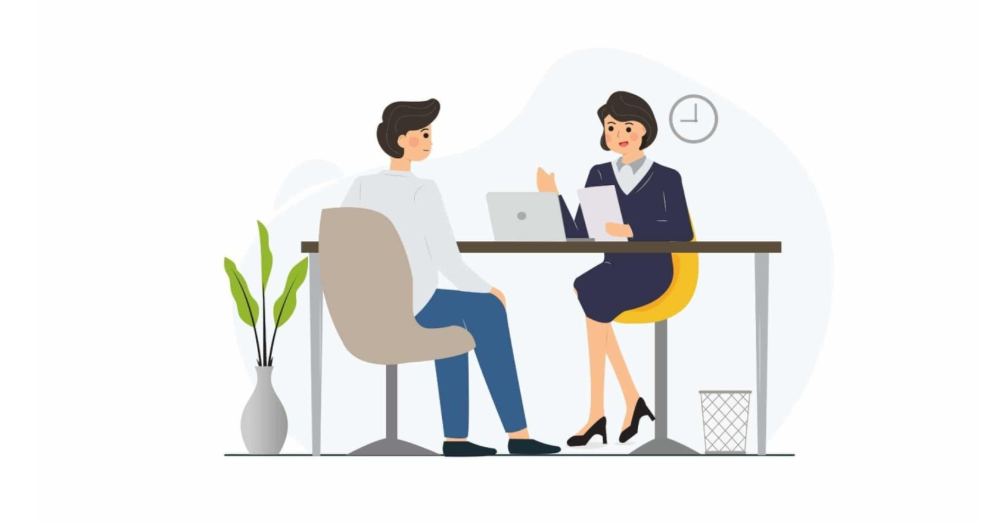
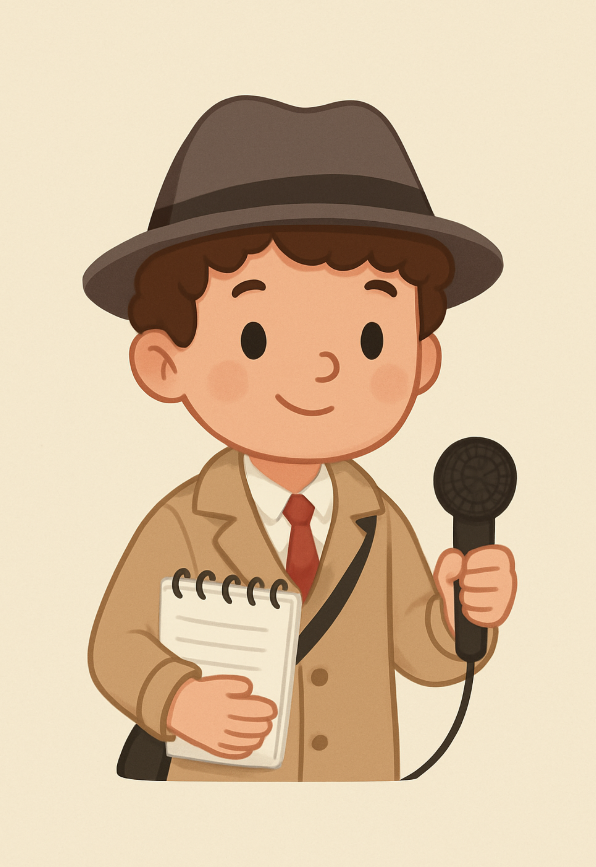
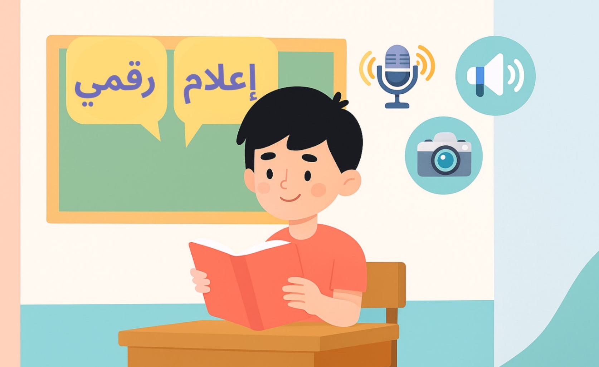
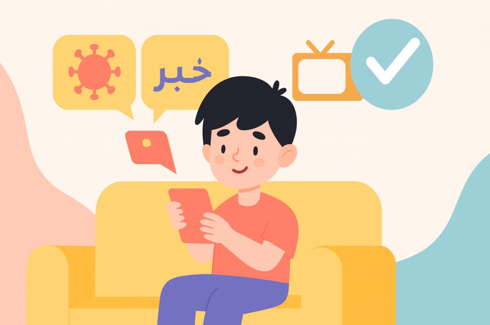

من قلمنا

كيف تجري مقابلة ناجحة؟
تعد المقابلة الصحفية من الطرق التي يستخدمها الصحفيون لمعرفة معلومات اكثر فبدل أن يعتمد على ما يسمعه أو يقرأه فقط يذهب مباشرة إلى الأشخاص الذين يعرفون تفاصيل اكثر عن الموضوع ويسألهم أسئلة تساعده على فهم الصورة بشكل أوضح.
وتساعد المقابلة على سماع آراء مختلفة خصوصًا آراء الأشخاص الذين عاشوا المشكلة أو الحدث عن قرب، فالتجارب والقصص الحقيقية تمنح الخبر جانبًا إنسانيًا مهمًا.
ولكي تكون المقابلة ناجحة تحتاج كصحفي إلى بعض المهارات الأساسية أهمها:
1) استعد جيدًا
قبل المقابلة يجب أن:
- تعرف الموضوع جيدًا.
- تعرف الشخص الذي ستقابله وتقصى عنه.
- جهز أسئلة مفهومة ومباشرة.
كلما كنت مستعدًا كانت المقابلة أكثر فائدة ودقة.
2) مهارة الاستماع
المقابلة ليست أسئلة فقط بل هي إصغاء حقيقي.
عليك ان:
- تنتبه لكل ما يقوله الضيف.
- تسأل سؤالًا إضافيًا عند ظهور معلومة جديدة.
- احترم مشاعر الشخص واعطه وقتًا للتعبير.
الاستماع الجيد يساعدك كصحفي على اكتشاف تفاصيل لم تكن تعرفها مسبقًا.
3) اختار المكان المناسب
قد تكون المقابلة:
- وجهًا لوجه
- عبر الهاتف
- أو عبر الإنترنت
المهم أن يكون المكان هادئًا ومريحًا حتى يستطيع الضيف التحدث بثقة ووضوح.
4) اجعل الضيف يشعر بالراحة
بعض الأشخاص يتوترون عند رؤية الكاميرا أو الميكروفون، لذلك من الجيد أن:
- ترحب بالضيف بلطف قبل البدء.
- اشرح له طريقة المقابلة.
- اكد له أن الهدف هو الاستماع إلى رأيه فقط.
عندما يشعر الضيف بالثقة، يقدم إجابات أفضل وأكثر صدقًا.
5) حافظ على سير المقابلة
عليك أن:
- تركز على هدفك الرئيسي.
- اسأل سؤالًا واحدًا في كل مرة.
- تجنب الجدال أو المقاطعة.
- ابقى مهذبًا وواضحًا.
بهذه الطريقة تصبح المقابلة مرتبة ومفيدة للقارئ أو المشاهد.
المصدر: أ.م.د محسن جلوب الكناني، دار امجد للنشر والتوزيع

من هو الصحفي الشامل؟
الصحفي الشامل او الصحفي متعدد المهارات هو الصحفي الذي يمتلك مجموعة من المهارات التي تؤهله للعمل في مختلف مجالات الإعلام ويتميّز بقدرته على إنتاج محتوى متنوع يجمع بين الأخبار، والتقارير والتحقيقي والبودكاست والتصوير والانتاج بما يتناسب مع اختلاف المنصات والجمهور.
أبرز سمات الصحفي الشامل:
- يمتلك القدرة على كتابة مختلف أنواع المحتوى الصحفي، من الأخبار إلى التقارير
- يجيد استخدام الوسائط المتعددة، مثل التصوير الفوتوغرافي والفيديو وتحرير الصوت، إلى جانب مهارات الكتابة.
- يتمتع بقدرة عالية على البحث والتحقيق، والاعتماد على مصادر متعددة لضمان الدقة والمصداقية.
- يستطيع العمل عبر منصات إعلامية متنوعة، من الإعلام التقليدي إلى الإعلام الرقمي ووسائل التواصل الاجتماعي.
- يتسم بالمرونة في تناول موضوعات مختلفة، مثل الرياضة والاقتصاد، والثقافة، والفنون، وغيرها من المجالات.
- يحرص على التفاعل مع الجمهور، من خلال الرد على آرائهم وتساؤلاتهم وبناء علاقة تواصل مستمرة معهم.
وبذلك يُعد الصحفي الشامل نموذجًا متكاملًا للصحفي الجديد، القادر على مواكبة تغيرات الاعلام السريعة وتقديم محتوى شامل يلبي احتياجات الجمهور المتنوع.
المصدر: Deuze, M. (2007). Media work. Cambridge, UK: Polity Press.

أهمية الإعلام للأطفال
اليوم نعيش في يتطوّر بسرعة كبيرة، وتتدفق فيه المعلومات من كل الجوانب، فلم يعدون يتعلمون من المدرسة والكتب فقط، بل من التلفاز، والإنترنت، والألعاب، ومنصّات التواصل الاجتماعي، وهذا يجعلهم يرون الكثير من الأخبار والقصص والصور، منها ما هو صحيح ومنها ما هو غير صحيح.
ولهذا السبب يصبح تعلّمهم للإعلام أمرًا مهم وضروري، لأن الإعلام يساعدهم على فهم ما يرونه بدل أن يصدقون كل مايرونه.
الإعلام بالنسبة للأطفال له جوانب حادة:
فمن خلاله يتعرفون على العالم، يفهمون قضايا المجتمع، ينمّون لغتهم ومهاراتهم ويكون لهم رأيهم الخاص القائم على معلومات حقيقية وصحيحة، ولكن في المقابل قد يأتيهم معلومات مضللة، شائعات، محتوى غير مناسب ومعلومات كاذبة.
ولهذا يصبح تعلّم الإعلام بمثابة مناعة معرفية تحميهم من الوقوع في الخطأ، وتعلّمهم أن يسألون دومًا:
- – هل ما شاهدته صحيح؟
- – من قال هذه المعلومة؟
- – ما هدفه؟
- – وما الدليل عليها؟
ويحتاجون إلى تعلّم الإعلام لأنه يساعدهم على:
- للتمييز بين المحتوى الحقيقي والمزيّف.
- حماية أنفسهم من الإشاعات والمحتوى الضار.
- ليستخدمون الإعلام وسيلة للتعلّم وتطوير مهاراتهم.
- يفكرون بذكاء ويفهمون قبل أن يصدّقون.
وفي الحقيقة، إن تعلّم الإعلام ليس درسًا إضافيًا، بل هو مهارة أساسية يحتاجون إليها للحفاظ على سلامتهم في عالم السرعة والرسائل الكبيرة، وفي الختام تعلّم الإعلام يجعل الطفل قادرًا على الفهم والتحليل والسؤال، لا على قبول كل ما يُعرض عليه.
وهذه هي القوة الحقيقية في زمن المعرفة.

الحقيقة تبدأ من مصدر موثوق:
في ليلة يوم الأحد، قبل بداية العام الدراسي الجديد، ظهر خبرٌ مفاجئ يقول: "سيتم تأجيل بداية العام الدراسي لمدة أسبوع كامل بسبب فيروس متفشٍّ."
انتشر الخبر بشكل كبير بين الطلاب والأهالي، وبدأ الذعر يسيطر عليهم، وقرّر البعض أنهم لن يخرجوا من منازلهم بسبب الفيروس.
في تلك اللحظة، كان الطالب أحمد يستمع للأحداث، ولاحظ أنه لم يتم نشر أي خبر في الصحف الرسمية ولا في القنوات الإخبارية، فذهب إلى أهله وقال:
"لا ينبغي أن نذعر، يجب علينا أن نتصرف بحكمة ونتأكد من المصادر الرسمية."
أمسك الأب سريعًا بجهاز التحكم عن بُعد، ونادى أفراد عائلته لتشغيل قناة الأخبار الرسمية، ليجد أنه لا يوجد أي خبر عن تأجيل الدراسة ولا عن تفشّي فيروس خطير.
ذهب أحمد ليراسل زملاءه في الصف، لينقل لهم الخبر الصحيح، وهو يشعر بالفخر لأنه لم يصدق الإشاعات واعتمد على المصادر الرسمية.
وبعد دقائق، انتشر خبرٌ ينفي الإشاعة، جاء فيه:
"لا صحة لوجود فيروس خطير متفشٍّ أو تأجيل بداية العام الدراسي."
عمّ الهدوء بين الأهالي والطلاب، واستكملوا استعداداتهم للعام الدراسي الجديد بكل فرح واطمئنان.
وتعلّم الجميع من تلك الحادثة درسًا مهمًّا، وهو أن المعلومة الصحيحة لا تُؤخذ من كل مكان، بل من مصدر موثوق فقط. ومنذ ذلك اليوم، صاروا أكثر وعيًا وحذرًا، يعلمون أن التحقق خطوة تنقذهم من الخوف، وأن الحكمة تبدأ بالسؤال قبل التصديق.
من الصورة إلى الفيديو: كيف تؤثر في الإعلام الرقمي
تنويه: هذا المحتوى أصدره المعهد التكنولوجي للعلاقات العامة والإعلام الرقمي، وقد تم إعادة صياغته هنا لعرض المعلومات بشكل مبسط وواضح.
من خلال اطلاعي على محتوى المعهد، لاحظت أن الصورة والفيديو أصبحت مهمة جدًا في الإعلام الرقمي. فهي ليست مجرد صور أو مقاطع، بل تساعد على جذب الانتباه ونقل الأفكار بسرعة، وتوصل المشاعر بطريقة أقوى من الكلمات وحدها.
تأثير الصورة والفيديو
الصورة والفيديو يؤثران في مشاعر الناس وسلوكهم. الصورة تظهر لحظة معينة أو شعور محدد، بينما الفيديو يعطي فكرة أو رسالة أعمق لأنه يجمع بين الحركة والصوت والصورة.
لماذا الصورة والفيديو مهمة؟
الصورة والفيديو تساعدنا على:
- جذب الانتباه: أسهل من النصوص الطويلة.
- توصيل المشاعر: مثل الفرح، الحزن، أو الأمل.
- تبسيط المعلومات: تجعل الأمور المعقدة أسهل للفهم.
كيف نستخدمها؟
يمكن استخدام الصورة والفيديو بطرق مختلفة:
- الصور الإخبارية: لتوثيق الأحداث بسرعة.
- الصور الرمزية: لنقل رسائل عاطفية أو ثقافية.
- الفيديوهات الدعائية: لجذب الانتباه والمشاعر مع الصوت والصورة.
- الفيديوهات التوثيقية: لرواية قصص حقيقية وشهادات الناس.
تأثيرها على الجمهور
الصورة والفيديو تؤثر على الناس بطريقة كبيرة:
- تجعل المشاعر أقوى من مجرد القراءة.
- تبقى في الذاكرة لفترة أطول.
- تؤثر على القرارات، خاصة في الإعلانات والحملات.
التحديات
لكن هناك بعض المشاكل، مثل:
- حقوق الملكية الفكرية.
- خطر نشر معلومات خاطئة.
- إمكانية التلاعب بالصورة أو الفيديو لتغيير الرسالة.
المستقبل
التكنولوجيا ستجعل الفيديوهات التفاعلية والوسائط البصرية أكثر أهمية في الإعلام، خصوصًا في الحملات الاجتماعية والسياسية، وستساعد الناس على التفاعل بشكل مباشر مع المحتوى.
الخلاصة
الصورة والفيديو أدوات قوية تساعد على توصيل الأفكار والمشاعر بوضوح، لكن يجب استخدامها بحذر لتكون صادقة وواقعية.